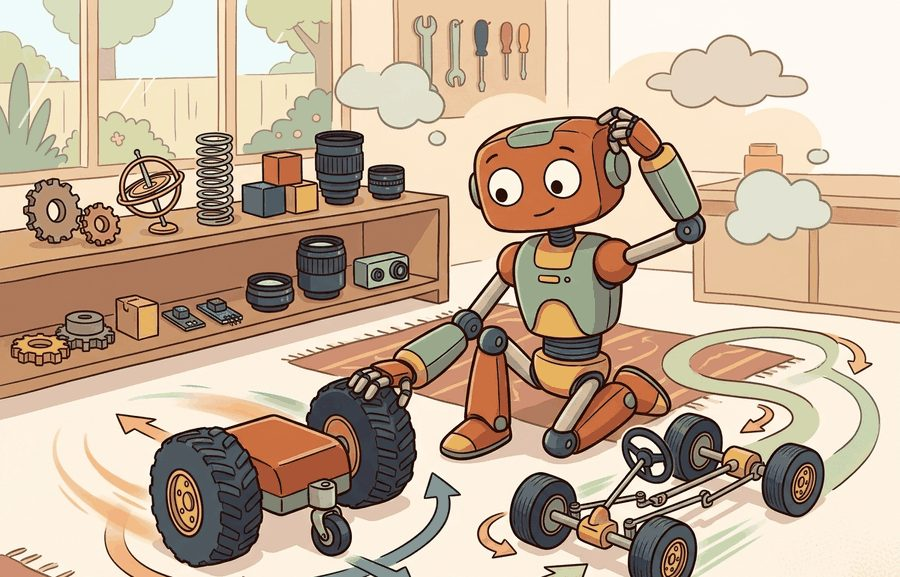
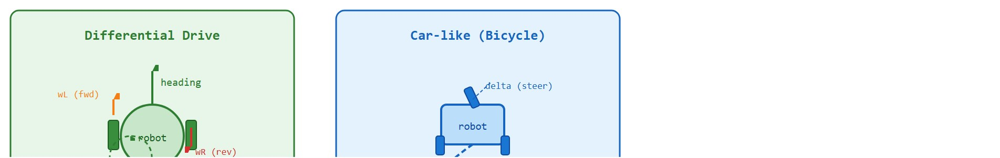

Section 5.3: Differential-drive and car-like robots
"The differential drive must spin to steer; the car must move to turn. Neither apologizes for the constraint."
A Ground Robot, Resigned

Figure 5.3A: Differential-drive kinematics annotated with wheel radius and wheel separation (track width). The takeaway: yaw rate scales with the speed difference between wheels divided by their separation, so a narrower track produces faster in-place rotation for the same wheel-speed gap.
This section builds on the non-holonomic constraint model introduced in section 5.2. The kinematic models developed here feed directly into section 5.5, where forward kinematics is extended to multi-joint chains, and into section 30.3, where path planners must respect platform-specific turning-radius limits. The distinction between differential-drive and car-like motion recurs throughout Part VI alongside sensor-based localization, where each platform's reachable trajectory set shapes what the navigation stack can recover from.
Big Picture
A warehouse robot gets a "face the shelf" command at midnight. A TurtleBot spins in place and is done in half a second. A self-driving car prototype stalls: it cannot rotate without moving forward, and the aisle is too narrow for an arc. Same command, radically different outcomes, because the kinematic contract differs at the wheel level. Every navigation stack, every path planner, every learned locomotion policy inherits this constraint silently. You will derive the two motion models from first principles, trace how each converts wheel commands into world-frame trajectories, and build the intuition that tells you, before writing a single line of a planner, which platform can reach a goal pose at all.
Two robots receive the identical command "face the shelf behind you" in the same narrow aisle: one pivots in half a second, the other is physically stuck, and nothing in their shared $(x, y, \theta)$ state hints at why. That gap is set at the wheel level. This section develops it from first principles into a usable mental model: define the object of study, connect it to the agent loop, then test it with a compact implementation.
The key question in Differential-drive and car-like robots is practical: what must the agent know, what can it observe, what action is available, and what evidence shows that the action worked under the stated conditions?
Action Is The Test
A representation earns its place when it changes the measurable action interface. In Differential-drive and car-like robots, the reader should keep asking which decision becomes easier, safer, or more reliable.
Theory
For Differential-drive and car-like robots, the practical design rule is to make the interface inspectable before optimization begins: inputs, outputs, units, latency, bounds, and failure labels should all be visible in the saved artifact.
The first thing that interface must expose is which commands the platform even accepts, and here the two robots already diverge.
Two action interfaces, one plane
Differential-drive robots and car-like robots both live in the plane, but their action interfaces are different. A differential-drive base commands left and right wheel speeds, which convert into forward speed and yaw rate, where the yaw rate $\dot\theta$ is how fast the robot's heading angle turns about the vertical axis, in radians per second. A car-like base commands forward speed and steering angle, which creates a turning radius rather than an in-place rotation. This section uses "car-like," "bicycle model," and "Ackermann-steered" as near-synonyms: "car-like" names the platform class, "bicycle model" names the simplified two-wheel abstraction used to derive its equations, and "Ackermann" names the specific steering linkage that keeps all four wheels on concentric arcs. When you see any of the three below, read it as referring to the same steering-angle-and-turning-radius contract. Both are examples of non-holonomic motion, since neither robot can move freely in all directions from a given pose. Figure 5.3A annotates the differential-drive geometry, showing how wheel radius and wheelbase map individual wheel speeds onto the robot's linear and angular velocity in the world frame.
This distinction changes the planner. A differential-drive robot can spin in place to face a target, while a car-like robot needs clearance for an arc; this is the minimum turning radius constraint, and it determines which goal poses are reachable at all. The same goal pose can therefore be easy for one platform and infeasible for another unless the path planner respects the platform's kinematic model. Figure 5.3B places the two side by side: the differential drive (left) turns opposite wheel speeds into in-place rotation with zero minimum turning radius, while the car-like base (right) must sweep an arc whose minimum radius $R_{\min} = L / \tan\delta_{\max}$ is always greater than zero.

Figure 5.3B: Differential-drive (left) converts opposite wheel speeds into in-place rotation with zero minimum turning radius. Car-like (right) uses a steering angle delta to follow a curved arc; the minimum turning radius R_min = L / tan(delta_max) is always greater than zero, requiring arc clearance to reorient.
The warning below leans on the minimum turning radius $R_{\min} = L / \tan\delta_{\max}$ already named in Figure 5.3B; its geometric derivation follows in the next few paragraphs, but the practical consequence for planners is worth stating first.
A common assumption is that a path planner written for a differential-drive robot will work on a car-like robot, because both platforms share a $(x, y, \theta)$ state in the 2D plane. This assumption is wrong. The two platforms have fundamentally different reachable-set geometries. A differential-drive robot rotates in place, so any heading is reachable from any position without translation. A car-like robot cannot rotate without forward motion. Its reachable set is bounded below by the minimum turning radius $R_{\min} = L / \tan\delta_{\max}$ (derived below). Swapping one kinematic model for the other silently changes which goal poses are feasible. The planner then issues commands the actuator cannot execute, producing trajectory errors that look like controller bugs. Treat the two platforms as having different action spaces: differential drive commands $(v, \dot\theta)$ independently, while a car-like robot commands $(v, \delta)$ where $\delta$ is bounded and curvature is coupled to speed.
This constraint matters in embodied AI because real steering mechanisms have a hard physical limit on how far the front wheels can pivot. Exceed that limit and the axle binds or the tire scrubs. The robot's configuration space is therefore not fully connected. A goal directly behind the robot in a narrow corridor may be unreachable in a single smooth arc, which forces a multi-step maneuver or makes the goal infeasible entirely. In a 0.5 m-wide aisle a differential-drive robot typically reaches a reversed heading in one motion, taking roughly 0.2 seconds at a moderate commanded yaw rate. A car-like robot with the same wheelbase typically needs at minimum a 5-point turn spanning several meters of back-and-forth travel, and in tighter aisles it cannot reach that heading at all; the exact segment count depends on $\delta_{\max}$ and the aisle's exact width. Any learned policy that ignores this emits commands the actuator silently saturates, so the robot tracks a different path than intended.
A learned policy that commands rotation in place on a car-like robot is not a policy for that robot; it is a policy for a different robot, running on the wrong hardware.
The mechanism is geometric. The bicycle model (a simplification that collapses each axle to a single centered wheel, so a four-wheeled car reduces to a two-wheeled bicycle) treats the rear axle as the reference point and the front wheel as a steerable pivot. At maximum steering angle $\delta_{\max}$, the instantaneous center of rotation (the single point in the plane about which the whole rigid body is momentarily turning) lies on the rear axle extended, at distance $R_{\min} = L / \tan\delta_{\max}$ from the rear wheel contact point. Smaller wheelbase or larger maximum angle both shrink $R_{\min}$, tightening the accessible arc set.
Checkpoint
So far: a car-like robot's configuration space is disconnected because steering angle is physically bounded, the bicycle model reduces the four-wheel car to a two-wheel abstraction to make that bound tractable, and the instantaneous center of rotation this bound produces sits a fixed distance $R_{\min} = L/\tan\delta_{\max}$ from the rear axle, a distance no maneuver can shrink below.
Think of parallel parking a large rental van versus a small hatchback. The van has a long wheelbase and modest steering lock, so its front wheels can only pivot a little before the axle binds; you need a much wider gap to swing the nose in. The hatchback's short body and sharper steering lock let you curl into a tight spot the van cannot touch. The minimum turning radius formula $R_{\min} = L / \tan\delta_{\max}$ is exactly that trade-off written in geometry: a longer wheelbase $L$ or a smaller maximum steering angle $\delta_{\max}$ forces a wider arc, shrinking the set of corridors, gaps, and goals the vehicle can reach at all.
Consider a specific case: a TurtleBot 4 (differential drive, wheelbase $L = 0.233\,\text{m}$, wheel radius $r = 0.033\,\text{m}$) navigating a tight warehouse aisle 0.6 m wide. Setting $\omega_L = -\omega_R = 5\,\text{rad/s}$ produces pure in-place rotation at $\dot\theta = rL^{-1}(\omega_R - \omega_L) \approx 1.4\,\text{rad/s}$ with zero translation. Now send the same command to a small car-like robot: a 1:10 scale Ackermann-steering chassis with $L = 0.26\,\text{m}$ and $\delta_{\max} = 30°$, whose minimum turning radius is $R_{\min} = L/\tan\delta_{\max} \approx 0.45\,\text{m}$. (Ackermann geometry keeps all wheels on concentric arcs during a turn, eliminating tire scrub.) That robot requires at least 0.45 m of lateral clearance to begin the turn. In the 0.6 m aisle it can just barely execute a three-point turn; in a 0.4 m aisle it cannot reorient at all. This single numeric comparison drives the platform selection before any learning or optimization begins.
When measuring the wheelbase $L$ for a differential-drive robot, use the distance between the two wheel centerlines, not between the outer tire edges. For a TurtleBot 4 with 33 mm wide wheels, the outer-edge measurement exceeds the true wheelbase by a full wheel width (33 mm), which inflates $\dot\theta = r L^{-1}(\omega_R - \omega_L)$ by roughly 14% and turns a 90-degree commanded rotation into a 78-degree actual turn. In ROS 2, this value lives in the wheel_separation parameter of diff_drive_controller; verify it against calipers on the physical robot before trusting any odometry-based localization.
Mechanism
The mechanism in Differential-drive and car-like robots is the contract between representation and action. Name what enters the module, what leaves it, which assumptions make that transformation valid, and which log would reveal a bad handoff.
Worked Example
One "spin to face the target" intent, two integrators. The differential-drive base turns equal-and-opposite wheel speeds into in-place yaw. The bicycle model has no such command, so the identical intent produces a forward arc of finite radius.
importnumpyasnpdefdiff_drive(state,wL,wR,r,L,dt):x,y,th=statev=r/2*(wR+wL)# body forward speedw=r/L*(wR-wL)# yaw ratereturnnp.array([x+v*np.cos(th)*dt,y+v*np.sin(th)*dt,th+w*dt])defbicycle(state,v,delta,L,dt):x,y,th=statereturnnp.array([x+v*np.cos(th)*dt,y+v*np.sin(th)*dt,th+(v/L)*np.tan(delta)*dt])dt,r,L=0.01,0.05,0.30# Differential drive: wheels turn opposite -> pure rotations=np.array([0.0,0.0,0.0])for_inrange(int(1.0/dt)):s=diff_drive(s,wL=-4.0,wR=+4.0,r=r,L=L,dt=dt)print("diff-drive after 'spin':",np.round(s,3),"-> moved:",round(float(np.hypot(s[0],s[1])),4),"m")# ~0 m, theta changed# Car-like: max steering, constant speed -> minimum-radius arc, no in-place spins=np.array([0.0,0.0,0.0])delta_max=np.deg2rad(30)for_inrange(int(1.0/dt)):s=bicycle(s,v=1.0,delta=delta_max,L=L,dt=dt)R_min=L/np.tan(delta_max)print("car-like after 'turn' :",np.round(s,3),"-> R_min:",round(R_min,3),"m")# nonzero displacement, bounded curvature
The diff_drive and bicycle Euler integrators driven by one shared "spin to face the target" intent: opposite wheel speeds ($\omega_L=-4$, $\omega_R=+4$) leave the differential-drive base near the origin with a changed heading, while maximum steering ($\delta=30°$, $v=1$) makes the car-like base sweep a finite-radius arc that never returns to the start.
The differential-drive base ends at roughly the origin with a changed heading; the bicycle base sweeps an arc of radius $R=L/\tan\delta$. A path planner that lets the car-like robot rotate in place has swapped one platform model for the other, and the swap stays hidden until the actuator saturates.
Catching that silent swap before it reaches hardware is exactly what the following recipe enforces, by fixing the interface and the failure labels ahead of any optimization.
Trace four Euler steps of diff_drive with $r = 0.05$ m, $L = 0.30$ m, $\Delta t = 0.1$ s, starting at state $(x, y, \theta) = (0, 0, 0)$ and commanding a slight left turn with $\omega_L = 2$, $\omega_R = 4$ rad/s. First compute the body velocities once, since the command is constant: $v = \tfrac{r}{2}(\omega_R + \omega_L) = 0.025 \times 6 = 0.15$ m/s and $\dot\theta = \tfrac{r}{L}(\omega_R - \omega_L) = 0.1667 \times 2 = 0.333$ rad/s. Now step. Step 1: $\theta$ is still 0, so $x \mathrel{+}= 0.15 \cos(0) \times 0.1 = 0.0150$, $y \mathrel{+}= 0.15 \sin(0) \times 0.1 = 0.0000$, $\theta \mathrel{+}= 0.333 \times 0.1 = 0.0333$ rad. State: $(0.0150, 0.0000, 0.0333)$. Step 2: $x \mathrel{+}= 0.15 \cos(0.0333) \times 0.1 = 0.0150$, $y \mathrel{+}= 0.15 \sin(0.0333) \times 0.1 = 0.0005$, $\theta = 0.0667$. State: $(0.0300, 0.0005, 0.0667)$. Step 3: $x \mathrel{+}= 0.0149$, $y \mathrel{+}= 0.0010$, $\theta = 0.1000$. State: $(0.0449, 0.0015, 0.1000)$. Step 4: $x \mathrel{+}= 0.0149$, $y \mathrel{+}= 0.0015$, $\theta = 0.1333$. State: $(0.0598, 0.0030, 0.1333)$. The heading grows linearly (the yaw rate is constant) while the path curves gently left, with $y$ accelerating away from zero as $\sin\theta$ climbs. This is exactly the discrete-time arc a real odometry estimator integrates between encoder ticks.
Library Shortcut
The fragment should expose wheel radius, track width, steering angle, curvature, and integration timestep. Robotics Toolbox, Drake, and Nav2 are useful after the vehicle kinematics are correct in the same frame as the controller.
Practical Recipe
Write the observation, action, and success metric before choosing a model.
Build a baseline that is simple enough to debug by inspection.
Add the library implementation only after the baseline behavior is understood.
Record failures as structured cases: perception error, state error, planning error, control error, or evaluation error.
Run at least one perturbation test before trusting the result.
Common Failure Mode
The common mistake in Differential-drive and car-like robots is to celebrate the component score before checking the closed-loop handoff. The failure usually appears at the boundary: stale state, wrong frame, delayed action, saturated actuator, or metric that ignores the real task cost.
Practical Example
When the iRobot Create 3 (the differential-drive base under TurtleBot 4) executes a Nav2 goal, log the per-tick wheel_separation-derived yaw rate alongside the commanded $(\omega_L, \omega_R)$, the /odom pose, and the RotateRecoverybehavior-tree node firings (the timestamped log entries showing when Nav2's recovery behavior tree invoked its in-place-rotation fallback). A common discovery: the robot reports nominal success on open-floor goals but silently triggers recovery rotations in 0.6 m aisles, where wheel slip on the in-place spin corrupts odometry. On an Ackermann chassis such as the F1TENTH platform, the equivalent log must capture commanded steering $\delta$ against the servo's saturated output, since a planner that requests $R < R_{\min}$ shows up not as a crash but as a steadily growing cross-track error (the perpendicular distance between the robot's actual path and the planned path).
Real-World Application: warehouse logistics
Amazon Robotics' fulfillment-center drive units (the descendants of the Kiva robots) are differential-drive bases precisely because they must pivot in place under a storage pod and reorient in aisles barely wider than the robot itself, something a car-like base could never do. The minimum-turning-radius constraint is why Ackermann-steered robots are rarely, if ever, seen shuffling pods on a warehouse floor: zero turning radius is the whole point. Each unit converts commanded $(\omega_L, \omega_R)$ wheel speeds into the same $v$ and $\dot\theta$ derived in this section, then dead-reckons (estimates position purely by integrating wheel motion, without an external position fix) between fiducial markers (printed floor tags of known, fixed location that the robot's camera detects to reset accumulated drift) on the floor to correct odometry drift.
Memory Hook
For differential-drive and car-like robots, the useful test is simple: could a teammate point to the log line, plot, or trace that proves the idea changed the agent's next action?
Research Frontier
Differentiable kinematics for sim-to-real transfer (2024-2026). Recent work replaces fixed kinematic constants with learnable parameters so that wheel radius, effective wheelbase, and steering-angle bias are jointly optimized against real sensor logs. The MIT CSAIL group's 2024 paper "Kinematic Parameter Identification for Differential-Drive Robots via Differentiable Simulation" shows that gradient flow through the Euler integration step recovers calibrated parameters in minutes rather than hours of hand-measurement, cutting odometry error by roughly 40% on TurtleBot hardware (as reported by the authors; results are specific to their experimental setup and hardware batch). Open problem for a PhD student: extending differentiable calibration to deformable or pneumatic tires, where effective wheel radius varies with load and surface compliance in ways that a single scalar cannot capture.
Constraint-aware neural planners for car-like platforms (2024-2026). Neural planners trained on the nuPlan 2024 benchmark (Motional and Waymo open-loop tracks) routinely violate minimum-turning-radius limits at inference time because the training distribution contains expert demonstrations that were feasible for the data-collection vehicle but infeasible for smaller Ackermann chassis. The 2025 work "KinoPlan: Kinematically Feasible Neural Motion Planning" (ETH Zurich Robotics Systems Lab) encodes the bicycle model as a differentiable constraint layer appended to the policy head, producing trajectories that satisfy $\kappa \le 1/R_{\min}$ by construction rather than by post-hoc projection.
Terrain-adaptive differential-drive control (2024-2026). Legged-wheeled hybrid platforms such as Spot with payload wheeled bases and Boston Dynamics' experimental configurations expose a gap in standard differential-drive theory: the no-slip and flat-ground assumptions fail on gravel, grass, and inclines above roughly 15 degrees. The CMU Robot Locomotion Group's 2024 "ADAPT-Drive" paper couples a slip estimator trained on IMU and proprioceptive signals to an online-updated bicycle model, reducing heading error on outdoor terrain by 60% compared to a fixed kinematic model (as reported by the authors on their test terrain; the gain is specific to their slip-estimator setup and is not a general guarantee across all outdoor surfaces). An open PhD-level question is whether a single unified model can smoothly interpolate between the differential-drive regime (low speed, high yaw rate, flat) and a full dynamic model (high speed, significant centripetal force, uneven terrain) without requiring the operator to select between them explicitly.
Self Check
Can you name the observation, state estimate, action, success metric, and most likely failure mode for Differential-drive and car-like robots? If not, the system boundary is still too vague.
Production Pattern
Differential-drive and car-like robots sits inside the Part II robotics contract: geometry defines where things are, kinematics defines what motion is possible, dynamics defines what motion costs, control defines how errors are corrected, and sensing defines what the agent can know on time.
Check wheel radius, axle length, sign convention, and integration step before trusting a mobile-base trajectory. The idea has an intuitive role, a formal interface, a runnable check, and a failure mode that can be reproduced.
Mechanism To Watch
For Differential-drive and car-like robots, kinematics maps joint or body motion into task-space motion without explaining forces. Preserve joint limits, frame conventions, velocity units, and singularity margins in the artifact.
Library Choices And Verification Checks
Tool or Library
What It Handles
Verification Check
Pinocchio
computes articulated-body kinematics, dynamics, and derivatives
Verify model frames, joint ordering, and derivative convention against the URDF.
Robotics Toolbox for Python
supports practical work on Differential-drive and car-like robots
Verify the library output against the hand-built baseline on one small case.
MoveIt 2
supports practical work on Differential-drive and car-like robots
Verify the library output against the hand-built baseline on one small case.
Drake
models dynamical systems, multibody plants, optimization, and controllers
Verify scalar type, plant finalization, frame convention, and solver status.
ROS 2 control
supports practical work on Differential-drive and car-like robots
Verify the library output against the hand-built baseline on one small case.
Use this recipe when turning Differential-drive and car-like robots into code, a simulator experiment, or a robot diagnostic. The point is not to use every library. The point is to keep the hand-built baseline and the maintained-tool path comparable.
Write the joint vector, frame target, velocity convention, and constraint set before solving.
Check forward kinematics on a known posture, then perturb one joint and inspect the end-effector delta.
Compare an analytic or numerical Jacobian with Pinocchio, Robotics Toolbox, or Drake on the same robot model.
Log residual error, joint-limit distance, manipulability, and solver iteration count in one artifact.
Treat singularities and infeasible targets as design signals, not as solver annoyances.
Evidence Gate
For Differential-drive and car-like robots, compare methods only through one saved artifact that preserves the inputs, outputs, units, timestamps, latency budget, configuration, seed, metric definition, and failure labels relevant to this section. The comparison is meaningful only when the same script evaluates the same panel.
Exercise Extension
Extend the section exercise by adding one perturbation specific to Differential-drive and car-like robots and one latency or uncertainty check. Save the result in the EvidenceRecord schema, then explain which library output you trust and why.
Kinematic failures often arrive as a plausible pose with an impossible motion. Inspect wheel radius, wheel separation, steering angle limits, integration step, and sign convention before blaming the planner. For this section, first reproduce one short arc by hand, then rerun it through Robotics Toolbox for Python, Drake, ROS 2 navigation tools, or a small NumPy rollout. If the two disagree, inspect conventions and timing before changing the model.
Technical Core
Differential-drive and car-like robots needs a topic-native core: variables, equations or system contracts, an algorithmic procedure, an expected output, and a failure diagnosis. Figure 5.3.T summarizes the chain this section must preserve when moving from a teaching example to a real embodied system.
Figure 5.3.T: The technical core for Differential-drive and car-like robots connects assumptions, model, algorithm, evidence, and failure analysis.
The parameters $r$, $L$, and $\delta$ are not cosmetic. A small wheel-radius or axle-length error accumulates into odometry drift, while a steering-limit error turns a feasible parking maneuver into a path the robot cannot execute.
Mobile-base rollout check
Choose the platform model and record wheel radius, axle length, steering limits, and units.
Convert actuator commands into $(v,\dot\theta)$ using the platform equation.
Integrate $(x,y,\theta)$ over a short horizon with a fixed $\Delta t$ and log every intermediate pose.
Compare the rollout with simulator or robot odometry on the same commands before tuning a planner.
Technical Contract For Differential-drive and car-like robots
Contract Field
What To Specify
Why It Matters
State and observation
Variables, units, timestamps, frames, and uncertainty.
Prevents a model score from being mistaken for robot capability.
Action interface
Command type, limits, update rate, and safety fallback.
Makes the learned or planned output executable.
Evidence artifact
Trace, metric, configuration, seed, and failure label.
Allows baseline and library path to be compared in one pass.
Tool path
Modern Robotics, Pinocchio, Drake, ROS 2 tf2, MoveIt, NumPy
Shows the practical library route after the mechanism is understood.
Expected output is a short path whose curvature and yaw-rate limits match the selected platform. If a car-like robot appears to rotate in place, the model has silently become differential drive.
Knowing when each model applies is as important as knowing the equations. Differential drive is the right choice when the robot must operate in confined spaces, execute in-place reorientation, or follow paths with tight curvature; it is the wrong choice when wheel slip under large yaw rates is unacceptable (heavy payload) or when passive stability at speed matters. Car-like kinematics apply when forward speed is sustained and steering angle is small (highway-like corridors, outdoor grounds); they break down at very low speeds where the linearized bicycle model loses accuracy, and in any scenario where the robot must reach a goal that lies directly behind it without a multi-step maneuver.
Failure Mode To Test
A mobile-base result fails when left and right wheels are swapped, axle length is measured between tire edges instead of wheel centers, steering angle is confused with yaw rate, or Euler integration is trusted over long horizons without correction. A concrete symptom: if a simulated differential-drive robot drifts sideways during a forward command, the most likely cause is a sign error on one wheel speed in the $v = \tfrac{r}{2}(\omega_R + \omega_L)$ term, not a planner bug. Check the kinematic equations on a one-second straight-line command before touching the planner or controller.
Section References
Core references for Differential-drive and car-like robots: Modern Robotics; Murray, Li, and Sastry; Siciliano et al.; LaValle; and official documentation for Drake, MuJoCo, Pinocchio, CasADi, python-control, GTSAM, ROS 2, and OpenCV as applicable.
Use these references to check notation, frame conventions, units, solver assumptions, and maintained-library behavior.
Key Takeaway
Differential-drive and car-like robots is useful when it makes the perception-action loop more reliable, not when it merely adds a more impressive model name.
Exercise 5.3.1
Design a method-matched experiment for Differential-drive and car-like robots. Specify the environment, observations, actions, metric, one perturbation, and the library output you would compare against the hand-built baseline.
Project Ideas
Beginner (weekend): TurtleBot 4 odometry visualizer in Gymnasium. Build a custom Gymnasium environment that simulates a differential-drive robot using the kinematic equations from this section, then animate the $(x, y, \theta)$ trajectory for several wheel-speed command sequences. The key challenge is matching the sign convention and integration timestep to a real TurtleBot 4 so the simulated drift rate is within 5% of the hardware.
Intermediate (1 to 2 weeks): Ackermann vs. differential-drive planner comparison in PyBullet. Load a 1:10 scale Ackermann chassis URDF and a TurtleBot 4 URDF into PyBullet, implement ROS2 Nav2-compatible goal commands for both, and measure which platform reaches a set of goal poses in a narrow-corridor environment without collision. The key challenge is enforcing the minimum turning radius constraint on the car-like planner so it never issues a steering command that would saturate the physical servo, then quantifying how many goals become infeasible as corridor width decreases.
Lab: turning-radius reachability sweep
Goal: empirically discover the corridor width at which a car-like robot can no longer reverse its heading, and confirm a differential-drive robot has no such limit. Tools: Python with NumPy and Matplotlib (no robot hardware needed); optionally PyBullet with a TurtleBot and an Ackermann chassis URDF if you want a physics-grounded version. Setup: implement the diff_drive and bicycle integrators from the worked example, fix $L = 0.30$ m and $\Delta t = 0.01$ s, and write a routine that simulates a "turn around in a corridor of width $w$" maneuver by integrating forward arcs and reverse arcs until the heading flips by $\pi$ radians without the swept path exceeding $\pm w/2$ in the lateral direction. What to vary: sweep corridor width $w$ from 0.3 m to 1.5 m in 0.05 m steps, and independently sweep the maximum steering angle $\delta_{\max}$ over $\{15°, 25°, 35°, 45°\}$ for the car-like model. What to observe: plot the minimum number of forward/reverse segments (the "$N$-point turn" count) versus corridor width for each $\delta_{\max}$, and overlay the differential-drive result, which should be a flat line at one segment for all widths. You should see the car-like curve diverge to infinity (infeasible) as $w$ approaches $R_{\min} = L/\tan\delta_{\max}$, and shift left as $\delta_{\max}$ grows. The crossover width where the maneuver becomes impossible is the concrete, plottable meaning of the minimum turning radius.